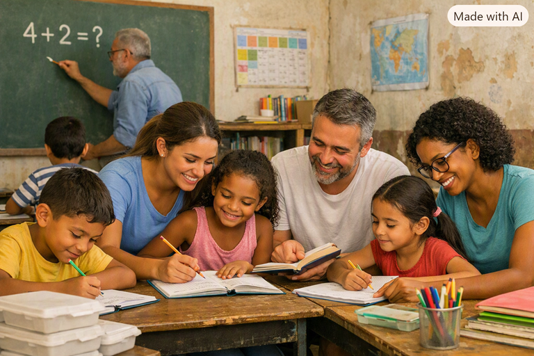

Projeto Prato Cheio

Arrecadação de alimentos não perecíveis e distribuição de refeições diárias para famílias em situação de vulnerabilidade.
Impacto: Mais de 1.000 refeições entregues por mês.
Conheça as ações que desenvolvemos para apoiar nossa comunidade e transformar realidades.
Arrecadação de alimentos não perecíveis e distribuição de refeições diárias para famílias em situação de vulnerabilidade.
Impacto: Mais de 1.000 refeições entregues por mês.

Oferecemos reforço escolar, oficinas de tecnologia e incentivo à leitura para crianças e jovens do bairro.
Impacto: Atendimento a 80 estudantes no contraturno escolar.

Cursos rápidos e workshops de capacitação para inserção de adultos no mercado de trabalho.
Impacto: Mais de 200 pessoas capacitadas no último ano.